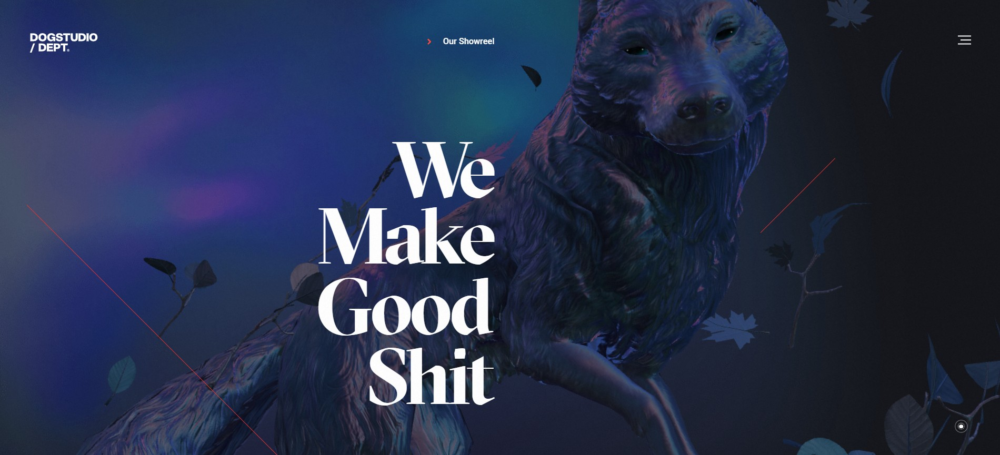
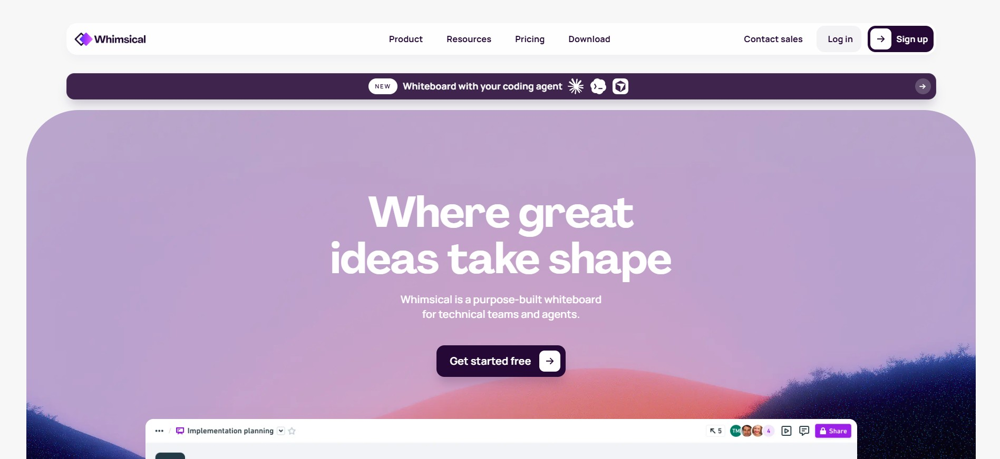
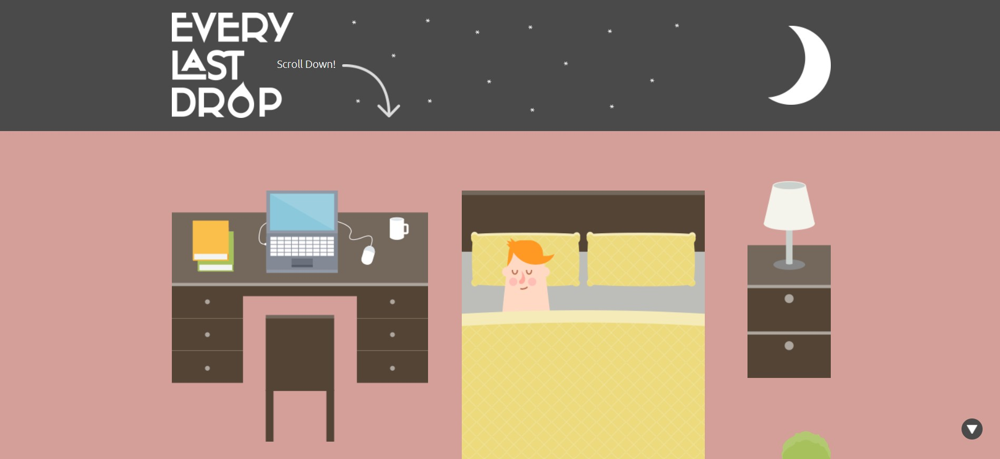
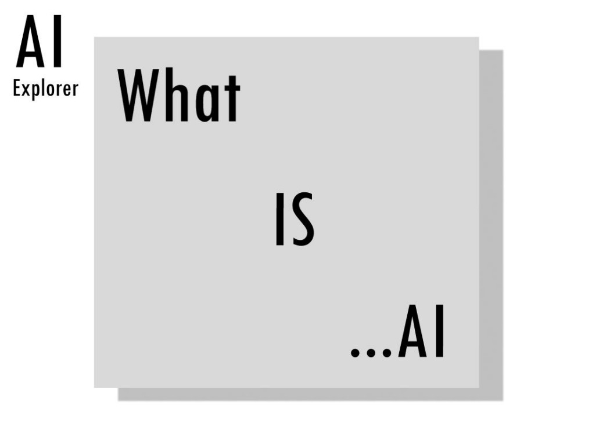
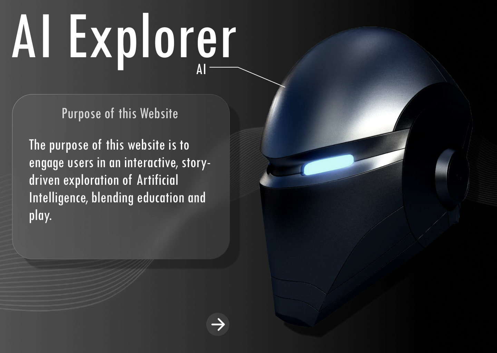
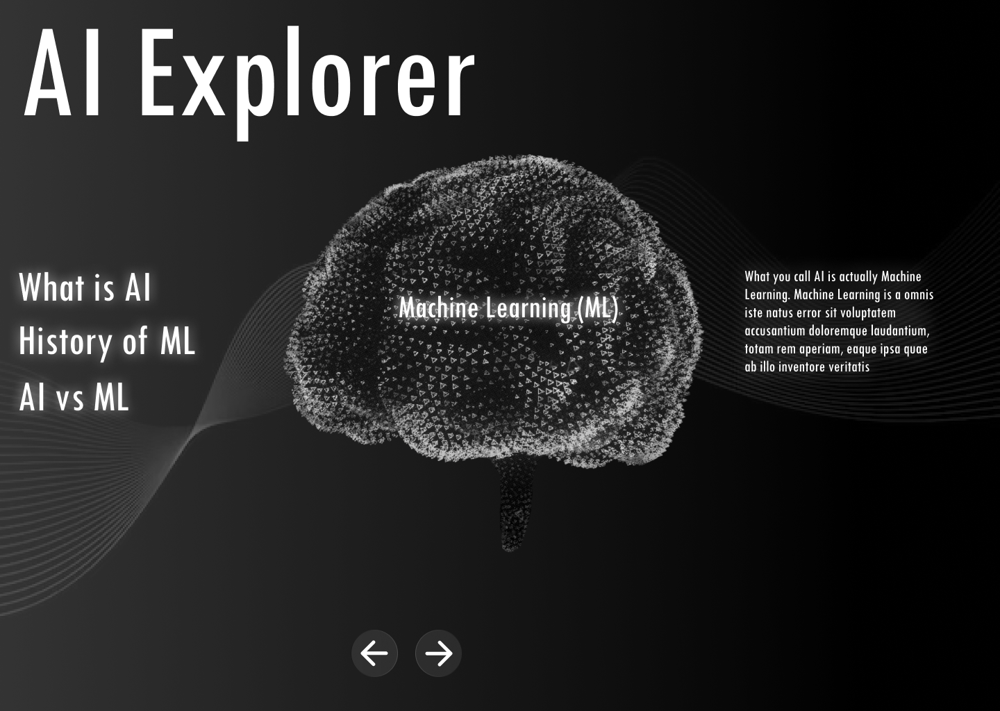
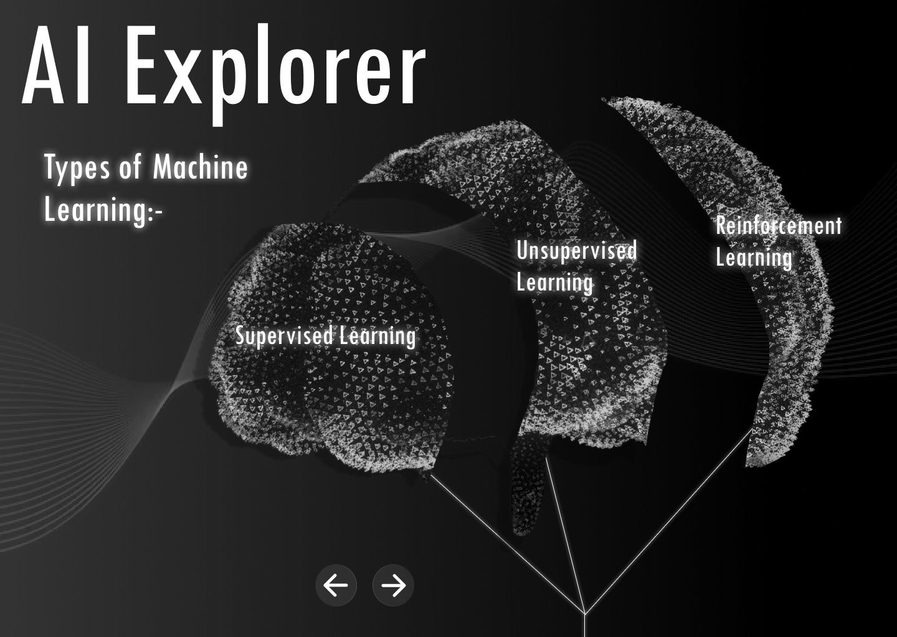
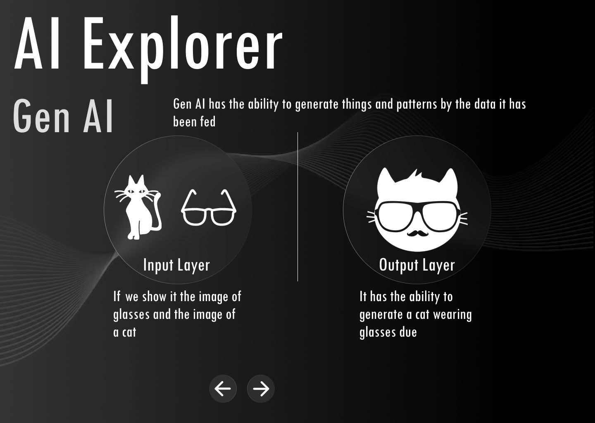
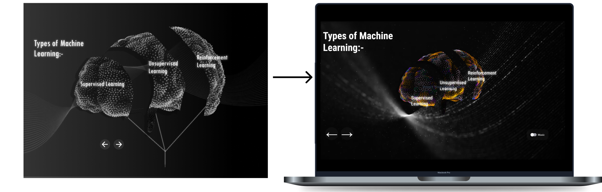

Understanding this concept, I’ve implemented 5 ways the engagement could be improved:-
- Visual Storytelling
- Ambient sounds
- Aesthetic animations conveying a story
- Micro animations
- No usage of Jargons
Design & Code Prototype
AI Explorer is an interactive educational website that makes AI fundamentals simple and engaging for beginners. I led the project from user research and Figma prototyping through to frontend development with HTML, CSS, JavaScript and GSAP.
AI and machine learning concepts are complex and often presented in text-heavy formats, making them difficult and unengaging for beginners to understand.
Discovery
Understanding this concept, I’ve implemented 5 ways the engagement could be improved:-
Key Insights
I interviewed new learners and university students who are currently studying AI. I needed to strike a balance between beginner and advanced learning levels.
Increases engagement
Both of the groups dislike jargons
Both groups want to feel they are an active participant rather than passive viewer
Subtle visual effects and micro animations
Navigation page must be easy to understand and communicate its purpose efficiently
Competitor Analysis



Proposed Solution
Wireframes


I picked Dark and High Contrast because it focuses on engagement through stunning visuals and high contrast lighting, while also targeting to reduce cognitive load because of emphasis by contrast. Ultra minimalist seems like an overly restrained presentation which can reduce engagement for this particular audience and content, like that IBM AI website I saw. Users will learn better if the material is engaging. The dreamy layout poses challenges such as discarding a type of audience who might appreciate a more traditional website that features text. Hence, Dark and High Contrast seems like a perfect middle ground for all of these concerns.
Final Design




I also used AI tools such as Claude and Figma AI for rapid development. My experience in programming helped me identify flaws in the generated code.
Trade-offs Made

Reflection
Next, I want to add subtle sound effects to make the website feel more interactive, since my research suggested that sound improves engagement.
I also want to add more gamified interactions, as research showed that gamification is valued highly among users.
References